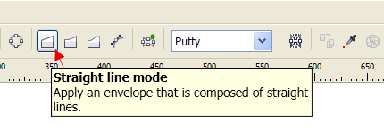
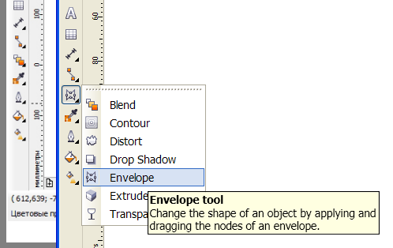

Помогите создать эффект
saltcress / 26.01.2013, 15:31
Форум:
Как получить эффект представленный на рисунке: изгибание текста и одновременно уменьшение размера шрифта?
Как получить эффект представленный на рисунке: изгибание текста и одновременно уменьшение размера шрифта?

themadman,
Можно подробнее, как вы создали кисть из текста.
Чтобы получить более-менее приемлемый результат, нужно создать строку текста сразу нужной длинны. Просто так безнаказанно ее растягивать не получится - появятся нежелательные искажения. Поэтому для завитушек разной длины нужно будет создавать отдельные штрихи (если планируется использовать шрифт одного размера).Кстати, создать правильный штрих у меня получилось с помощью последовательного применения к тексту эффектов Envelope (в режиме Straight, о котором упомянул Sancho) и Perspective. Или можно в обратном порядке. Ни один из них по отдельности не дает 100% нужного результата
Sokolovich,
Если Envelope это оболочка, то где у нее режим Straight?
Perspective - это стало быть Эффекты- Добавить перспективу.
А вот он:

Perspective – таки, да.
Если в этом режиме потянуть за один из угловых маркеров оболочки вверх или вниз при зажатой клавише Shift, то противоположный маркер двинется ему навстречу (или наоборот) и призойдет симметричное сжатие или растягивание выбранной стороны.
Sokolovich,
Поглядите на скрине - где его тут искать???
То ли я тупой, то ли лыжи не едут... запарился уже, ничего найти не могу.
Сначала тут:

а потом в строке свойств, выбранного инструмента
Подключаюсь к обсуждению. ;)
Как я понял, сузить один конец у вас уже получилось, совместными стараниями?
Теперь внимательно читаете тему Внутренняя ссылка
Делаете из сужающего текста РАСТЯГИВАЮЩУЮСЯ кисть и применяете ее на кривую
MBK,
Так, чтобы опять не искать не в том месте, не подскажите ли (а лучше покажете), где находится растягивающаяся кисть?
Ссылку еще не смотрел, но сразу есть встречный вопрос – а как эта кисть будет растягиваться? Есть у нас например текст из 20 букв, который нормально ложится на линию, скажем длиной 20 см. А что делать если далее нужно наложить текст того же кегля без изменения пропорций на линию длиной уже 30 см. Кисть сама напишет недостающие 10 букв? ;) Или просто растянет существующий текст по ширине?
Страницы